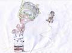

Múlt heti rádióműsorunkban idéztük Yoweri Musevini ugandai elnök szavait, amelyben a kelet-afrikai államok egyesítését követelte egy afrikai holdprogram megindításának céljából. Arra kértük olvasóinkat, próbálják elképzelni, milyen is lesz, amikor a fekák a Holdra mennek. Az alábbi történetet Gizi fedőnevű gyárlakónk küldte. Két grafikai megoldás is született. Az elsőt ismeretlen olvasónk hozta papíron - máskor mondd a neved is, így nem tudjuk kiírni! - a másodikat pedig Gerysama, aki szokás szerint képregényt rajzolt. Előbbit illusztrációként a szöveg közepén, utóbbit a végén találhatjátok.
EGYESÜLT AFRIKAI EXPEDÍCIÓ
A Harmadik Világ visszavág
szájensz fiksün
2009. július 4., Ungabunga Központ, déli 12 óra 03 perc.
Perzselő nyári nap volt, az égbolton felhő nyoma nem látszott. A forrón
hullámzó levegő délibábot vetített az őrtorony sarkába a
szögesdrótkerítés mentén.
- Banánfa – gondolta Csimpi a barakk ablakából bámulva.
- Holló-kosz – gondolta Barakk Osama, de aztán rögtön gyanút fogott.
- Úúú-állomás – örvendezett Fekete Dákó vigyorogva.
- Idióták – gondolta a fegyveres vadőr, majd cigarettát vett elő és rágyújtott. Napszemüvege himmleresen csillogott.
Zöld katonai teherautó hajtott el háta mögött, és ment a szigorúan
őrzött Belső Körzet felé. Aztán egy másik teherautó lassított a
vadőrhöz érve. Az lassan hátrafordult, és faarccal a majomguánó-képű
teherautó-vezetőre meredt.
- Ungabunga, hungalunga, bla-blabla – magyarázta az ugandai az ablakon
kihajolva, idétlen gesztikuláció kíséretében. Aztán a gázpedálra
taposott, és a zöld járgány mély nyomot vágva a homokba, berregve
továbbindult abba az irányba, amerre az előző is ment.
A vadőr nem kapkodott. Szép nyugodtan elszívta cigijét, és egyenletes léptekkel a barakkban őrzöttekhez ment eligazítást adni.
- Valagutu legénysége! - kezdett bele. – Ungabunga Központ hamarosan
indítja űrhajójukat. Egy órájuk van, hogy összepakolják legszükségesebb
dolgaikat, felöltözzenek, és 13:00-ra Valagutun akarom magukat tudni.
Világos? (Heves fejrázás.) Ne feledjék: fontos küldetés a maguké!
Afrikai polgárként elsőként léphetnek majd a Hold felszínére, ami kis
lépés lesz maguknak, de óriási lépés az Egyesült Afrikai Expedíciónak.
Uraim! Afrika szeme magukon. Jó utat és sok sikert! – Tisztelgett, majd
hátraarcot csinált, és elvonult. A három holdutasjelölt csorgó nyállal
nézte távozását.
Minden olyan hirtelen történt. Mogyorónyi agyuknak alig volt ideje
felfogni az eseményeket. Összepakolták legszükségesebb felszerelésüket,
és elindultak a Belső Körzetbe. Helikoptereket láttak a fejük felett
repülni.
- Höhö, ú-állomás! – nevetett Dákó önfeledten.
- Óriásszúnyog – gondolta Csimpi és megvakarta a hónalját.
- Atomrakétapajzs-telepítő – töprengett Osama Jewbaka-jelmezében.
A Belső Körzetbe egy széles folyosó vezetett, mindenfelé emberek
sürögtek-forogtak. Odaérve alig volt idejük körülnézni, a vadőr tüstént
mellettük termett.
- Erre! – utasította őket, és határozott léptekkel elindult a
rakétakilövő-állomás felé. Ott két ember várta őket, egy a vadőrnél
alacsonyabb, fekete hajú férfi és egy magas, szőke, kék szemű, északi
típusú újonc katona.
- Fritzmann. – nyújtott kezet a vadőrnek a fekete hajú. Semmilyen
érzelem nem látszott az arcán. Komoly volt. Nem úgy, mint társa, aki
vidáman, széles mosoly kíséretében üdvözölte őket.
- Privjet, továrisi! Minyá závút Igor! Ócsiny prijátnó!
Még Csimpinek is integetett.
- Csimpánz! – mutatott rá Fritzmann Csimpire. – Mostantól neved Majom-1!
Jewbaka! Mostantól neved Majom-2! Te pedig – nézett végig Fekete Dákón –
Nigger! Fedélzetre! És ne feledjétek: a Hold is néha banán alakú! –
ezzel elrobogott.
- Dászvidánye! – integetett az orosz és ő is elment. Magukra öltötték
űröltözéküket (ezt a szót próbálja meg Pákó kimondani, hehehe – a
szerk.) és beültek az űrhajóba.
- Visszaszámlálás: 10, 9, 8… 3, 2, 1, kilövés!
Az űrhajó nagyot rázkódott és a kondenzsugár a magasba lökte. Ablakából
egyre kisebbnek látszottak a Körzet emberei, az Ungabunga, majd az
egész város. Nem sokkal később már az éterben lebegtek.
- Gyonyorú! – hatódott meg Fekete Dákó. – Ú-állomás, ú-állomás!
Recsegés hallatszott, aztán Fritzmann hangja a hangszóróból:
- Ungabunga Központ jelentkezik.
- Valagutu ú-állomás! – makogta Nigger.
- Ez nem űrállomás, te idióta! – szólt közbe Csimpi.
- Majom-1! Mi a feladata?
- Majom-1, jelentem, ellenőrizni a gombokat egytől harminchétig.
- Helyes. Majom-2! Mi a feladata?
- Jelentem, ellenőrizni a gombokat harminchéttől ötvenhétig.
- Nagyszerű! Nigger, mi a feladata?
- Jelentem, majmokat etetni, gombokhoz nem nyúlni! Csak azt nem értem, ha nem nyúlok semmihez, ki fogja kormányozni az űrhajót?
- Ne aggódjon! Az nem a maga hatásköre. A robotpilóta irányítja a gépet
a Hold felé, és biztosítja a komplikációmentes landolást. Rövid időn
belül ott lesznek. Kitartás! Különleges különítményeink további
információval fognak szolgálni, ha odaértek. Vége.
- Ha odaérünk? – csodálkozott Csimpi.
- Úrlények, úrlények! – örvendezett Dákó.
- Szerintem… űrnácik! – fogott gyanút Osama. – Biztos haláltáborokat
üzemeltetnek… a földönkívüliekkel együtt… a Holdon! Elgázosítanak,
elszappanosítanak, dunábalőnek, körülmetélnek, Úristen, mi lesz
velünk?! – pánikolt Barakk.
- Majd igyekszünk feltűnésmentesen elvegyülni közöttük – nyugtatta Csimpi.
Ennyiben maradtak. Valagutu lassan leereszkedett a Hold felszínére. Az utasok kiszálltak.
- Konnyebb vagyok, mint négy éve! Múkodott a Sóbert-diéta! – fedezte fel Nigger a csökkent gravitációs hatást.
Egy tányérsapkás tiszt lépett hozzájuk.
- Majom, Jewbaka, Nigger! Kövessenek! Parancs!
- Heil Hiller! – jópofiskodott Fekete Dákó egy fegyelmezett karlendítés mellett.
Egy nagy kapun mentek keresztül, melyen a következő felirat volt olvasható: „A szappan tisztává tesz”.
- Mi az a szappan? – értetlenkednek szinkronban Majom2 és Nigger.
- Banán – nyilvánított véleményt Majom1.
- Tényleg! – jutott Nigger eszébe. – A Hold akkor most banán alakú?
A többiek úgy tettek, mintha meg se hallanák. De Dákót ez egyáltalán nem zavarta.
- És mi az az anyag, amiből áll? Má’mint a Hold! Miből van? Homok? Vagy
mi ez a szurke? – lehajolt és tanulmányozásba vette a holdkőzetet.
- Sajtból van a Hooold, sajtból van a Hooold… - zendített rá Majom1.
- De hát ez nem is sajt! – értetlenkedett Nigger, és megpróbálta
megnyalni, de az űrhajós sisak megakadályozta ebben. – Mi van, ha
tényleg sajtból van? Vagy banánból? – elmélkedett.
- Te, szerintem ez holló-hamu! – vélte Barakk Osama. – Színe és állaga
alapján… - lábával kicsit megkotorta. – Igen. Alighanem hamu lesz.
Pfúj! Holló-kosz! – fintorgott.
- Ezek itt a Magas Szőkék szálláshelyei – törte meg a beszélgetést
vezetőjük, és egy természetellenesen meredő, furcsa alakú objektumra
mutatott. Bejáratánál egy alakot láttak fekete egyenruhában, melynek
ujján villámalakú jelek voltak. A tányérsapka alól nagy, sápadtfehér
arc bámult rájuk. Furcsa látvány volt. Hatalmas, fekete szemei alatt
két rés látszott, nyilvánvalóan azok szolgáltak légzőnyílás gyanánt.
Kicsi, ajaktalan szájából valami hosszúkás dolog lógott, és füstölt a
vége.
- Hogy nem fulladnak meg? Van itt levegő? – kérdezte Dákó. Hogy ezt
megállapítsa, leemelte sisakját, és azon nyomban kőkeménnyé fagyott. A
többiek ránéztek.
- Ez meghód! – állapította meg Csimpi és tapsolt a feje felett.
- Vidd az égetőbe! – adta ki a parancsot vezetőjük az egyik kapuőrnek.
- Jawohl, Herr Orbángruppenführer! – mondta, azzal elvonszolta a testet.
Barakk ebből semmit nem vett észre, azon gondolkodott, mi lehet az a hosszúkás tárgy annak a lénynek a szájában.
- Biztos azzal gyújtják be a kemencét – tűnődött.
Egy kerítés mellett haladtak el, melyen tábla volt, felirattal:
Nagyfeszültség! A kerítés érintése hamvasztást von maga után!
Túloldalán folyadékkal teli tartályok sorakoztak hosszasan,
mindegyikben úszott egy-egy szürke, ufó-fejű massza.
- Az ott Mengele doktor rabszolgatenyészete – magyarázta a tányérsapkás. Aztán vállat vont. – Valakinek dolgoznia is kell.
- 6 millió! – gondolta Csimpi.
- Űrnácik! – gondolta Barakk Osama.
- Ikrek! – gondolta Mengele doktor, mikor meglátta őket laboratóriumából kifelé jövet. – Horst! – kiabált oda kollégájának.
- Heil! – köszöntötte amaz.
- Ikrek, ugye?
- Annak tűnnek – bólintott Horst.
- A nevem Mengele. Jozef Mengele – nyújtott kezet.
- A kísérleti alanyai csak Onkel Mengelének szólítják – magyarázta Horst.
- Banán – mutatkozott be Csimpi is, és kezet rázott vele.
- Persze, van az is! – bólogatott a doktor, és vigyorgott tovább.
Barakk Osama elővigyázatosabb volt. Ő nem akart kezet fogni vele.
- Hallottam már magáról – szólt Osama, és nem is sejtette, hogy ebben a pillanatban milyen közel állt a lebukáshoz.
- Valóban? – lepődött meg Mengele, ezt onnan lehetett tudni, hogy
szemöldöke a homloka tetejére szaladt, de még mindig vigyorgott. Barakk
nem válaszolt. Félt. Már így is túl sokat árult el. Jozef azonban nagy
megkönnyebbülésére nem faggatta, hanem bekísérte őket a 101-es barakkba.
- Jó ebben a barakkban. Van levegő. Leöltözhettek. – mondta a
Halálangyal, közben két banánt vett elő, egyiket Csimpinek, a másikat
Osamának nyújtotta.
- Jó étvágyat! – vigyora szélesedett, ahogy mondta.
- Finom – gondolta Jewbaka, banánját a pofazacskójába tömve.
Mengele megvizsgálta, megmérte Csimpit, majd elkapta a karját és egy
zöld folyadékkal teli injekciós tűt döfött bele. Osama mindezt látva
megrémült, eszeveszetten kivágta az ajtót, és rohant az űrhajó felé a
menekülés reményében.
- Így ni. Meg is volnánk. – húzta vigyorra száját elégedetten Mengele,
és egy újabb banánt nyújtott Csimpi felé, de az mozdulatlan maradt.
- Nofene. Hát nem meghalt? Ez esetben sajnos az ikertestvére sem
maradhat életben, különben nem sikerülne a kísérlet.
Hirtelen Horst
rontott be az ajtón lihegve.
- Láttam elrohanni Jewbakát és követtem. Már az űrhajó spájzában van! –
jelentette főnökének. Mengele most nem vigyorgott, csak lassan
bólintott, felállt a székről, melyen ült, és szó nélkül követte
Horst-t. Az űrhajóhoz érve Mengele megkérdezte:
- Biztos, hogy bent van?
- Egész biztos. A saját három szememmel láttam.
Jozef bólintott. Szája gonosz vigyorra húzódott.
- Akkor nyitom!
* * *
Barakk nagyon félt.
- Szappan leszek, szappan leszek! – pánikolt. – Vagy… vagy…! –
Meghallotta a hangját. Ahogy engedik rá AZT!
- Lámpabúra!
Egyre
hangosabb lett.
- Gáz? Gáz! Bélgáz! – üvöltötte teli torokból. -
Elfingtam magam!
Teljesen kétségbe esett.
- Csípi a szemem, jaj! -
kiáltotta. - Engedjenek kiii!
Érezte az ammónia szúrós szagát.
Kaparta a torkát. Mintha fojtogatnák.
- Nem kapok levegőt! - zihálta. -
Nem! Ne! Neeeee!
Sikolya hörgéssé változott.
- Nyitják! Nyitják…!
Nyitják már a...
Minden elsötétült. Megelégedett boldogság lett úrrá
rajta. Testét kívülről szemlélte. Megállapította, hogy hülyén nézett ki
Csubakka-jelmezben. Örült is, hogy vége van. Felfelé emelkedett. Egyre
magasabbra. Látta. Látta, ahogy Horst és Mengele kiszedik testét a
spájzból, és elcipelik oda. ODA! Csattognak a bakancsok. És… és… és…
fehér (!) fűző van bennük! Hirtelen minden világos lett.
- Neeem! Nem
csinálhatnak szappant a testemből! Sem napernyőt! Nem engedem!
Eresszenek el! Eresszenek! – lihegte, de már nem hallották. – Hova
viszik a testem? – nyökögte egyre magasabbra és magasabbra emelkedve,
mígnem már nem látott semmit, csak a csillagok szikrázását, és végül... a
végtelen sötétséget.
* * *
- Új árucikkek! – fordult be Mengele vigyorogva a Magas Szőkék
szálláshelyére, egy dobozt tartva a kezében. Társai köré gyűltek, és
várták, miféle dolgokat szed ki belőle. Mengele elégedetten vigyorgott,
és felbontotta a dobozt. Belenyúlt.
- Ahá! Dohányzacskó! – mutatta fel diadalmasan az első darabot, ami a
kezébe került. – Napernyő! – Taps. És sorolta: - Lámpabúra, szandál,
papucs, cipő, szappan…
Bizony, bekövetkezett az elkerülhetetlen. Barakk Osama holdi maradványaival a Magas Szőkék mosták testüket. Borzalmas.
És a kapu gőgösen, makacsul tovább hirdette:
"A szappan tisztává tesz!"
Конец.